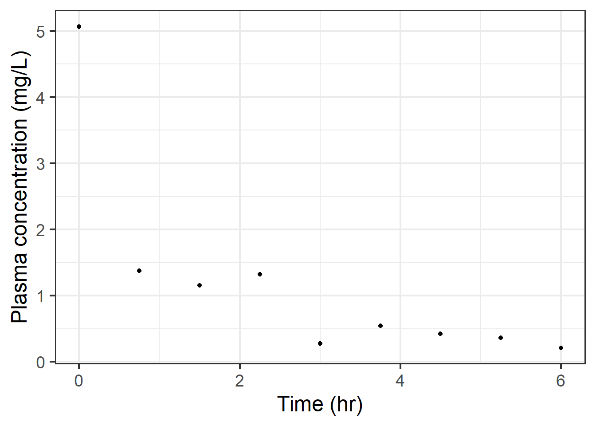
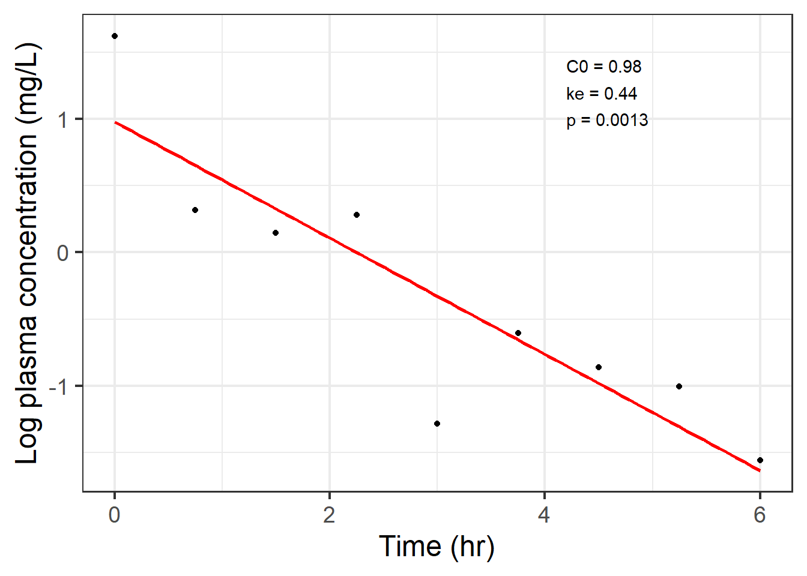
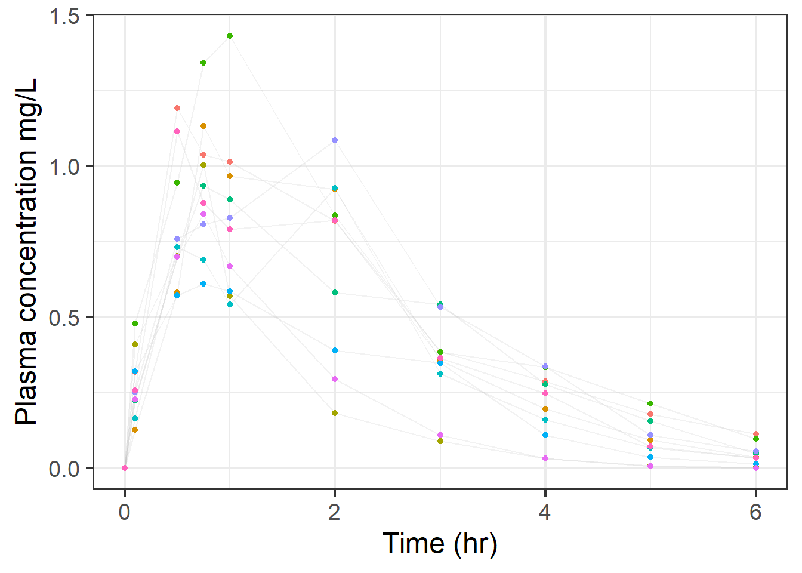
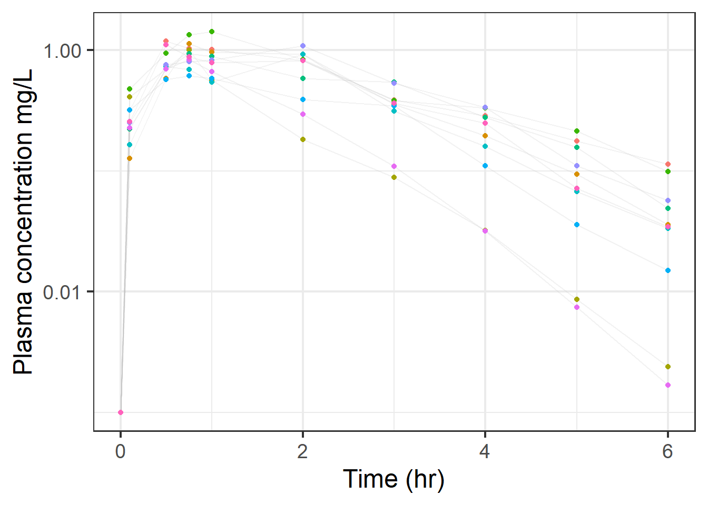
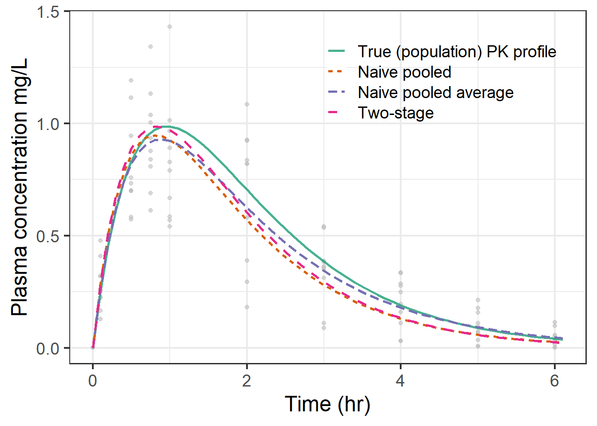
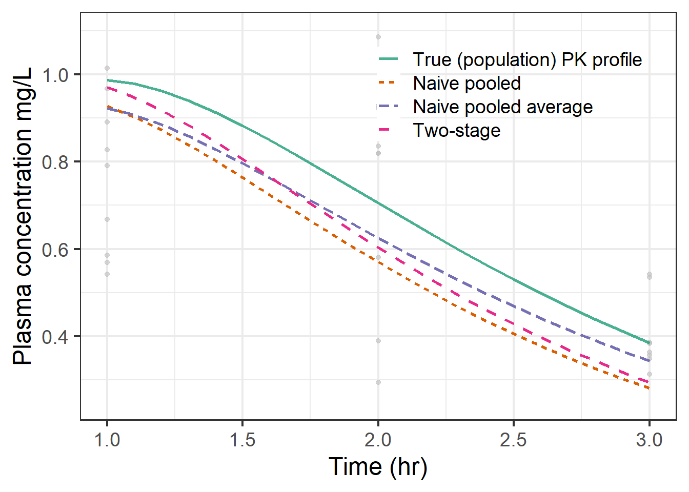
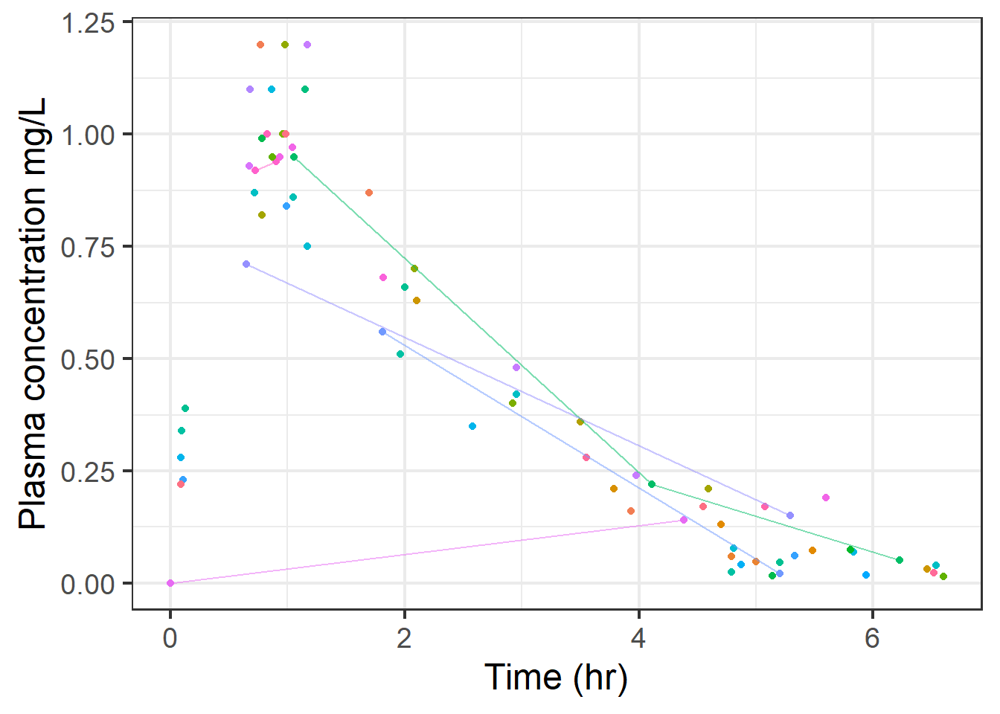
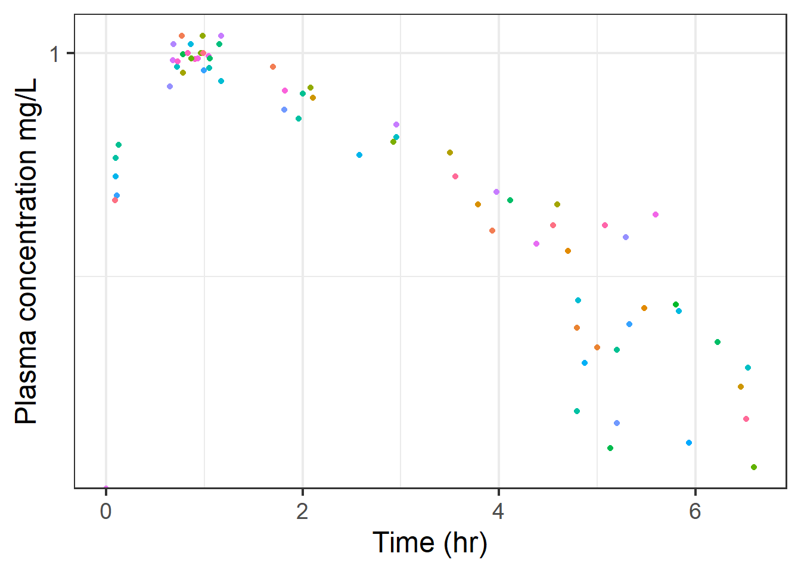
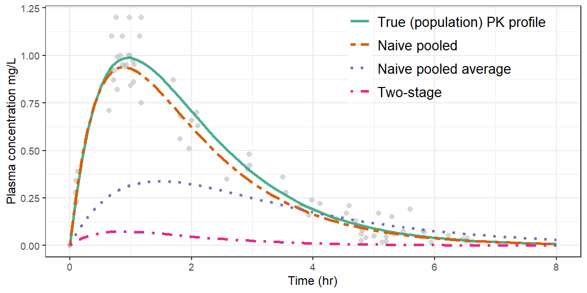
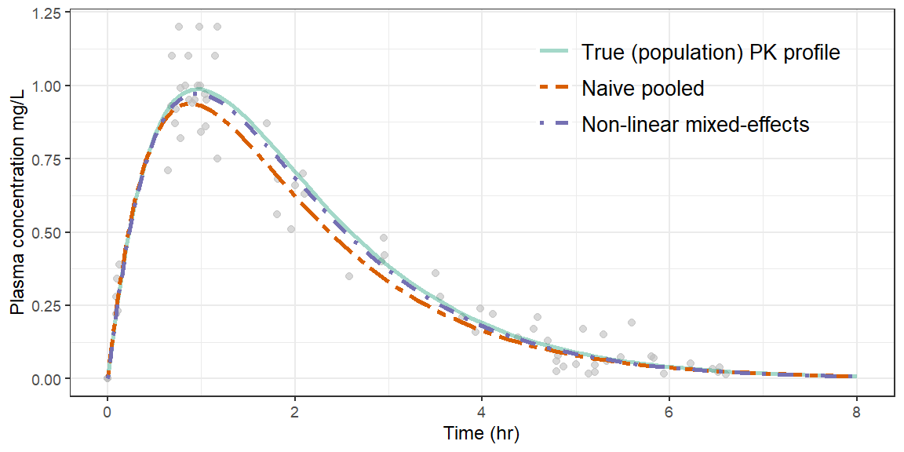

Chapter 4: Non-linear mixed effects models
Introduction
So far, we have only considered ‘rich’ data. This is data where there are lots of samples for each individual at each time point. This kind of data is really easy to produce in early-phase trials, including entry-into-human studies. However, at later phases of drug development, including post-marketing, pharmacokinetic data is often more challenging to obtain. In addition, rigid sampling times are less easy to implement outside of the confines of a dedicated pharmacokinetic study as patients or study participants are often at clinic or study visits at irregular times and so sampling may be somewhat opportunistic. Self-administered doses are also less likely to be accurately taken at prescribed times. These factors make modelling data using the non-compartmental methods we have used so far challenging and less accurate in these scenarios.
The purpose of today’s session, is to introduce the concept of non-linear mixed-effects modelling. This will include introduction to the modelling package . This package is challenging to install on your own machine, may work. If you run a Windows operating system, you are likely to also need . You will need to follow instructions online on how to install and download this. Installation on an Apple Mac usually requires to be downloaded. I would recommend using the SGUL machines for today’s session.
Learning outcomes
- Use linear regression to estimate PK parameters from a one-compartment IV-bolus model
- Explain the difference between rich and sparse data
- Explain different analytic approaches to modelling rich data
- Describe naive pooled, naive average, two-stage and mixed-effects approaches
- Outline the difference between these approaches
- Explain the difference between a linear and non-linear model
- Explain the components of a non-linear mixed-effects pharmacokinetic model, including defining the structural and statistical components of the model
- Analyse sparse pharmacokinetic data using a non-linear mixed-effects approach
This document is designed to provide you with notes of the session and be a handy resource when you come to revision. There are examples of code and the corresponding output from as we go along.
Recap the one-compartment IV-bolus model
You will remember that the time concentration profile of the one-compartment IV-bolus model (Figure 1) may be described using the equation \[C=C_0e^{(-k_et)}\] where \(k_e=\frac{Cl}{V_d}\) and \(C_0=\frac{Dose}{V_d}\)

Figure 1: One-compartment model
Recall also that taking the log of this equation provides us with \[log(C)=log(C_0)-k_et\] which is an equation of a straight line, i.e. of the form \[y=mx+c\] Data from a pharmacokinetic experiment may therefore be analysed using a compartmental approach and linear regression analysis, as calculating the gradient provides \(k_e\) and the intercept provides \(C_0\) from which \(V_d\) may be calculated.
So far, we have looked at pretty ‘clean’ data, that produces nice smooth lines of best fit that pass through all the data points. Real world experiments are not like this, there is additional (residual) variability that we have not simulated or thought about in our pharmacokinetic experiments (although we did see it when we were helping the particularly particular greengrocer). Let’s look at an example from a single individual with a slightly more realistic time-concentration profile (Figure 2).


Figure 2: PK data from an individual
Example code for calculating pharmacokinetic parameters using linear regression with a one-compartment IV-bolus model
If you would like to run through the code for this, there is an example below. As always, explore your data before modelling. This is furosemide data again. The dose is 40 mg.
pk<-read_csv("https://raw.githubusercontent.com/dlonsdal/SGUL_PK_data/main/messyonepersondata.csv")
#first plot and review
ggplot(pk,aes(x=time,y=conc))+
geom_point()+
theme_bw(base_size=18)+
theme(legend.position="none")+
ylab("Plasma concentration (mg/L)")+
xlab("Time (hr)")
#add log conc data and plot
pk$lconc<-log(pk$conc)
ggplot(pk,aes(x=time,y=lconc))+
geom_point()+
theme_bw(base_size=18)+
theme(legend.position="none")+
ylab("Plasma concentration (mg/L)")+
xlab("Time (hr)")+
# you can add linear regression line
geom_smooth(method=lm,se=F)The code above, produces the plots seen in (Figure 2). Now use linear regression approach to calculate individual PK parameters.
library(flextable)
fit<-lm(lconc~time,data=pk)
summary(fit)
#calculate Vd
C0<-exp(fit$coef[[1]])
Vd<-40/C0
ke<- -fit$coef[[2]]
Cl<-ke*Vd
#Output as table
Parameter<-c('Clearance','Volume of distribution')
Estimate<-c(Cl,Vd)
estpk<-data.frame(Parameter,Estimate)
flextable(estpk)| Parameter | Estimate |
|---|---|
| Clearance | 6.54 |
| Volume of distribution | 15.00 |
Rich versus sparse data
Rich data example
Let’s remind ourselves of what the output from a rich sampling schedule from a pharmacokinetic trial looks like. Figure 3 shows data from a simulated experiment of an orally administered 40mg dose of furosemide. There are 10 participants, each with a sample taken at 10 different time points. The fact that there are the same number of samples is important (it is known as balanced data). This reduces the possibility of one individual unduly influencing an analysis of data.


Figure 3: Rich data from a simulated pharmacokinetic trial (n=10, 10 samples per participant)
We have several options in our armory that we can use to describe these data. We could undertake a non-compartmental approach (Table 2) and use the package. Or, we could fit a model to the data.
| start | end | N | kel.last | cl.obs | vz.obs |
|---|---|---|---|---|---|
| 0 | 8 | 10 | 0.543 [19.5] | 17.4 [40.1] | 20.9 [15.9] |
Fitting a model
We are pharmacokinetic modelers. We have knowledge of mathematics and knowledge of pharmacology and biology. We can use our prior knowledge to choose a model to fit to the data that aligns with our knowledge of the system (human) that the data came from. In this case we will choose the one-compartment oral-absorption model. Note that there are 3 parameters to estimate in the one-compartment oral-absorption model - \(k_e\) (or \(Cl\)), \(V_d\), and \(k_a\). Importantly, there are more samples per participant than there are model parameters. This indicates that we have rich data to model.

Figure 4: One-compartment oral-absorption model
Figure 4 shows the graphical representation of the one-compartment oral-absorption model. To remind you, the equation for this model is \[C=\frac{F.D.k_a}{V_d.(k_a-k_e)}.(e^{-k_et}-e^{-k_at}) \] Remember, that without corresponding IV data, we cannot identify \(F\).
Analytical apprach
There are several ways to approach modelling these data:
- Treat all the data as if it is from a single individual, pool it together and fit a model (naive pooled approach)
- Average the data at each time point and then fit a model (naive average approach)
- Fit a model to each individual and then take an average of these pharmacokinetic parameters (two-stage approach)
Each of these approaches provides a slightly different model fit and each has its own pro’s and con’s. If you would like to read more about these, I suggest taking a look at the excellent article by Ette & Williams @Ette.
Figure 5 demonstrates the time-concentration profile modeled using each of these approaches. As the data was simulated, we also know the true population time-concentration profile. You can see that each of the different modeling approaches provides a slightly different fit to these data. None of them are perfect, but all provide an acceptable estimation of the true profile. They could all be used to make inferences from a pharmacokinetic study of this type.


Figure 5: Concentration-time profile showing `true’ population profile alonside a variety of approaches to modelling the rich data data
Sparse data example
Let’s look at what happens if the sampling is sparse (fewer samples) and less strictly taken at specified time points.


Figure 6: Sparse data from a simulated pharmacokinetic trial (n=40, 1-3 samples per participant)
Figure 6 shows a simulation of data that might more realistically be drawn from a later phase clinical trial. You can see that there are quite a number of participants (40) but that they do not contribute many samples. The shape of the data is the same (because the underlying PK parameters used to simulate the data are the same as I used in simulating the rich example). However, here one or two participants contribute 3-samples, but the majority have just 1-2 samples. The fact that there are different numbers of samples per participant is described as unbalanced. We therefore have fewer samples per participants than there are parameters to estimate in the model (sparse data). You can also see that samples were not taken at precisely the same time-points after a dose.
Figure 7 shows the same analytical approaches to these data as we used before with the rich data. The two-stage approach falls down entirely because most individuals don’t have enough samples to correctly determine absorption and elimination phases. The naive-pooled-average approach is equally unhelpful because samples were taken at non-uniform times so averaging out is inaccurate and leads to a poor model fit.
The naive-pooled approach still gives a pretty good fit, primarily because there are so many samples. However, whilst the average trend is good, the problem with a naive pooled approach, is that it overestimates variability. Since we treat all the data as if it comes from one individual, all the variability is dumped into a single residual error term at the end of the equation. \[C=\frac{F.D.k_a}{V_d.(k_a-k_e)}.(e^{-k_et}-e^{-k_at})+\epsilon\] By lumping all of the residual error into this single error term, the naive-pooled modelling approach misses out on describing accurately the time-concentration profile of an individual. This is fine if you just care about the mean-concentration, but we often care about what is happening to the whole population (or at least most of it).

Figure 7: Concentration-time profile showing ‘true’ population profile alonside a variety of approaches to modelling sparse data
Non-linear, mixed-effects modelling, an alternative approach
Before we dip our toes into the water of population-pharmacokinetic modelling using non-linear mixed-effects techniques, we must briefly note a few definitions.
Linear versus non-linear models
So far, we have broadly focussed on linear models. For example, we modelled carrot weight versus using a linear regression model of the form \[Carrot_{weight} =\beta_0+\beta_1.Carrot_{height}+\epsilon\] where \(\beta_0\) and \(\beta_1\) are model parameters and \(Carrot_{height}\) is the predictor variable and \(\epsilon\) is the residual (random) error.
Non-linear models are named as such because they cannot be described with a linear combination of model parameters. For example, you will remember the \(E_{max}\) model \[E=\frac{E_{max}C}{EC_{50}+C}\] where \(E\) (observed effect) is the outcome variable, \(C\) (drug concentration) is the predictor variable and \(E_{max}\) (maximum effect) and \(EC_{50}\) (concentration require to achieve half-max effect) are model parameters.
In this model, \(E\) cannot be expressed as a linear combination of the two parameters (\(EC_{50}\) and \(E_{max}\)).
When modelling pharmacokinetic data so far, we have taken advantage of linear transformations to change our model from non-linear to linear domains. For example \[C=C_{0}e^{-k_et}\] is a non-linear model for concentration \(C\) with model parameters \(C_0\) and \(k_e\). We have used logarithm to turn this into a straight line \[log(C)=log{(C_0)}-k_et\]
The reason we have done this so far is that linear-models are (relatively) easy to solve and calculate estimates for model parameters. Linear transformations are not always possible. When undertaking a non-linear approach, computer programs use an iterative approach to finding values for model parameters. With an iterative approach, a series of values for model parameters are tested to see which provide the values for model parameters that best fit the data.
The biggest difference you will notice in your introduction to non-linear modelling is that you will now be required to input an initial estimate for model parameters, i.e. you will have to give a value for clearance and volume of distribution that you want it to start at in its search for its final estimate of the population value of that parameter. That’s right, you give the program your best guess of what the true population value is and then the program tries to improve on it.
Fixed-effects, random-effects and mixed-effects models
Fixed-effects in an experiment or trial are controlled, or the same, for each individual. For example, drug dose and frequency of administration are usually fixed. They may also be variables where all possible values/levels are studied. For example, if you want to study the effect of smoking on the kinetics of a drug, you would study the drug kinetics in smokers- and non-smokers. The ‘smoking’ effect in your model is a fixed-effect since all levels of this factor (categorical)-variable are studied.
Random-effects in an experiment or trial are less controlled and do not include all possible levels. For example, we take a sample of participants in a trial, but we really want to know/make inferences about the population from which they are sampled. Since we do not study every single subject from the population, the participants in the study are a random effect.
This distinction is complex and we will come back to it again…and again…and again…
Mixed-effects is the easiest to define here. It is simply a model which contains fixed- and random-effects.
Using a compartmental pharmacokinetic model to provide an example of what we mean
Let’s return to the one-compartment IV-bolus model once more. Let us parameterise using primary pharmacokinetic parameters (clearance and volume of distribution). Broadly, our model remains the same \[C=C_{0}e^{-\frac{Cl}{V}t}\] however, we now add a further layer, by stating that our parameters are made up of a fixed (population mean) effect and a random (inter-individual variability) effect. \[Cl=\theta_{Cl}\times e^{\eta_{Cl}}\] the modelling process then estimates \[\theta_{Cl}\textrm{ -the population mean value for clearance (a fixed effect)}\] and makes some estimate of \[\eta_{Cl} \textrm{ -individual variability of clearance (a random-effect)}\]
Similarly, we model volume of distribution as \[V=\theta_{V}\times e^{\eta_{V}}\] and by extension in the oral-absorption model \[k_a=\theta_{k_a}\times e^{\eta_{k_a}}\]
A further note on \(\eta\)
I suspect this is somewhat mind-bending a set of ideas, compared to the modelling approaches you are used to from the course so far, but I need to extend the thought process a little. Let’s imagine an individual in a clinical trial, lets call them individual \(i\), or the \(i\)th individual. For \(i\), their value of clearance will correspond to \[Cl_i=\theta_{Cl}\times e^{\eta_i}\] now, it should be noted that \(\eta\) is assumed to follow a normal distribution with mean of zero and standard deviation \(\omega_{Cl}\) The mathematical notation for this is as follows \[\eta\sim N(0,\omega_{Cl}^2)\] you will see from this that in a non-linear mixed-effects model, we do not estimate the population mean value of \(\eta\) (since it is always zero), we estimate the variance, \(\omega^2\). Again, we have to tell our computer program a value to start looking for this.
You will finally note, that by choosing to model \[Cl=\theta_{Cl}\times e^{\eta_{Cl}}\] we are modelling clearance with a log-normal distribution. We could choose to model it \[Cl=\theta_{Cl}+ \eta_{Cl}\]but as we have previously demonstrated, our prior knowledge of clearance is that it is likely to have a log-normal distribution so we should choose to model it as such.
Advantages and disadvantages of non-linear mixed-effects models
Advantages of non-linear mixed-effects approach
- Enables modelling of sparse data, useful in later phase studies
- Allows more complex identification of covariate effects (for example organ function)
- Alternative sampling and modelling may allow for populations to be studied that are not straightforward to study in traditional phase-0/1 design (for example children, or drugs in pregnancy)
- Allows complex simulations which can inform subsequent study design
Disadvantages of non-linear mixed-effects approach
- Feels inherently more complex which can make people anxious about undertaking or understanding the process
- Computationally expensive
- Time consuming
- Often requires time cleaning/organising data from multiple sources
Non-linear mixed-effects model or population pharmacokinetic modelling (Pop-PK)?
You will often see these terms used interchangeably. They are not quite the same, but don’t worry about the nuances.
Non-linear mixed-effects modelling in
Non-linear mixed-effects modelling is computationally complex and requires knowledge of statistics, pharmacological models and how to use computer code…all skills that we have been developing. The industry standard non-linear mixed-effects modelling package is often cited as . This proprietary software is pretty complicated to start using. We are going to enter into the world of population pharmacokinetic modelling by using the package . This has the advantage of being open-source (and therefore free for you to download and use), as well as being based firmly in .
Installing is a little complicated. You may be able to do it by simply calling or . However it is more likely that you will first need to install (if you use a windows machine) or (if you are on an Apple Mac). These programs and the package take up a considerable amount of memory. The install on an Apple Mac can be particularly painful. It is unlikely that I will be able to support all of you to install this on your machines yourself so you will need to try to troubleshoot your own install issues if you choose to install on your own machine.
Please note that is available pre-installed when using via RStudio server.
Using
Just like and using the package, there are a number of steps that are required when using .
First you need to call to load the package. Then you need to build your model. We will attempt to fit a one-compartment oral-absorption model to the sparse furosemide data. The data set is available on the Advanced PK GitHub and can be called in the usual way using .
Then you need to build your model. When building the model, you specify two blocks in a standard . As always, you give your function a name, I have chosen .
The first part of the function is to set the initial estimates for your model parameters, this is known as the block. Remember that we are parameterising using \(k_a\), \(Cl\) and \(V\) in our one-compartment oral-absorption model. So we need to tell initial values for each of these parameters as well as values for the random-effects (\(\omega^2\)) associate with each parameter.
The second part of the function defines the model. The block. Here you describe the relationship between the fixed- and random-effects. A little more on this later.
After building the model we can run a check using , which describes the model we have built. And then we fit……….
sparse<-
read_csv("https://raw.githubusercontent.com/dlonsdal/SGUL_PK_data/main/sparsefru.csv")
library(nlmixr2)
# First make the model
one.cmt <- function() {
ini({
tka <-log(1.3)
tcl <- log(8)
tv <- log(20)
eta.ka~0.1
eta.cl ~ 0.1
eta.v ~ 0.1
add.sd <- 0.01
})
model({
ka <- exp(tka + eta.ka)
cl <- exp(tcl + eta.cl)
v <- exp(tv + eta.v)
linCmt() ~ add(add.sd)
})
}
# Run a check
nlmixr2(one.cmt)\[\begin{align*} {ka} & = \exp\left({tka}+{eta.ka}\right) \\ {cl} & = \exp\left({tcl}+{eta.cl}\right) \\ {v} & = \exp\left({tv}+{eta.v}\right) \\ linCmt() & \sim add({add.sd}) \end{align*}\]
# Fit the data using this model
fit<-nlmixr2(one.cmt,sparse,est="saem", list(print=0))## [====|====|====|====|====|====|====|====|====|====] 0:00:00| Est. | SE | %RSE | Back-transformed(95%CI) | BSV(CV%) | |
|---|---|---|---|---|---|
| tka | 0.261 | 0.0793 | 30.4 | 1.3 (1.11, 1.52) | 13.6 |
| tcl | 2.74 | 0.0326 | 1.19 | 15.5 (14.5, 16.5) | 18.6 |
| tv | 2.91 | 0.0661 | 2.27 | 18.4 (16.2, 21) | 15.5 |
| add.sd | 0.013 | 0.013 |
| Estimate | |
|---|---|
| eta.ka | 0.14 |
| eta.cl | 0.18 |
| eta.v | 0.15 |
Comparing output from the non-linear mixed-effects approach to the naive-pooled approach
Figure 8 shows the fit provided by the non-linear mixed-effects approach compared to the naive-pooled approach, which was our preferred of the other modelling approaches to sparse data from earlier in the session. You can see that the non-linear mixed-effects approach provides a superior fit to both absorption and elimination phases compared to the naive-pooled fit. Indeed, it is so close to the ‘true’ population value, I have had to fade the ‘true’ line so you can see it properly! Additionally, with the non-linear mixed-effects approach, we retain information on the inter-individual variability of model parameters.

Figure 8: Concentration-time profile showing ‘true’ population profile alonside a variety of approaches to modelling sparse data
Tidying up other nuances with
\(\mu\) referencing
You will note in the code that we seem to for no good reason input a ‘\(log(value)\)’ for our initial parameter estimates and then place them in the exponential domain in our block of code. This is known as \(\mu\) referencing.
Remember, we are modelling fixed and random effects for our model parameters \[Cl=\theta_{Cl}\times e^{\eta_{Cl}}\] now, it just so happens that the estimation algorithms work a little better if all of the parameters being estimated are in the exponential domain. We have to write our model with a little mathematical fiddling to achieve this. Recall that \[e^a\times e^b=e^{a+b}\qquad \textrm{AND}\qquad e^{log(c)}=c\] so instead of inputting \[Cl=\theta_{Cl}\times e^{\eta_{Cl}}\] into our model we instead input \[Cl= e^{log(\theta_{Cl})+\eta_{Cl}}\] you will have seen in Table 3 that estimates \(log(\theta)\) and then automatically back-transforms the final parameter estimates to the standard domain.
Residual variability
You will remember in our carrot linear regression model, all variability from the population mean was lumped into a residual variability term \(\epsilon\) \[Carrot_{weight} =\beta_0+\beta_1.Carrot_{height}+\epsilon\] In our non-linear mixed-effects model, we are more sophisticated about how we model variability, applying \(\eta's\) to the model parameters \[Cl=\theta_{Cl}\times e^{\eta_{Cl}}\] but these random-effects will not explain all of the deviation of the observed data. There will still be some left over, residual, error. So we add a residual error component to our model.
This is done in the line of code. Here we tell that we wish our residual error to be modelled in an additive fashion, i.e. \[C=\frac{F.D.k_a}{V_d.(k_a-k_e)}.(e^{-k_et}-e^{-k_at})+\epsilon\] again, we assume this residual error follows a normal distribution with mean \(0\) and variance \(\sigma^2\) \[\epsilon\sim N(0,\sigma^2)\] and you will have noticed that we give a starting value for \(\sigma\).
Components of a mixed-effects pharmacokinetic model
We have above described two key parts of a pharmacokinetic model. The structural model and the statistical model.
The structural model
The structural model is the underlying equation that describes the mean population trend. In short, this is the compartmental model you have chosen to model the data with. In the example above this was the one-compartment oral-absorption model. \[C=\frac{F.D.k_a}{V_d.(k_a-k_e)}.(e^{-k_et}-e^{-k_at})\]
The statistical model
The statistical model is how we have chosen to model the parameter- and residual- variability.
Parameter variability you will recall referred to the \(\eta\) terms, for example \[Cl=\theta_{Cl}\times e^{\eta_{Cl}}\] where \[\eta\sim N(0,\omega_{Cl}^2)\]
And our residual error model was the additive \(+\epsilon\) where \[\epsilon\sim N(0,\sigma^2)\]
Later in the course we will add a further component - the covariate model.
Tasks
- Download the sparse furosemide data from GitHub
- Plot the data
- Open the dataset and have a look at it. What do you notice about the variables?
- Model the data using
- Can you model with a proportional error model instead of an additive error model
- What happens if you change the initial estimates for the model parameters?
- Open the built-in data set theo_sd (run: ) and undertake the same steps as above
- How many participants in this trial?
- What can you tell us about them?